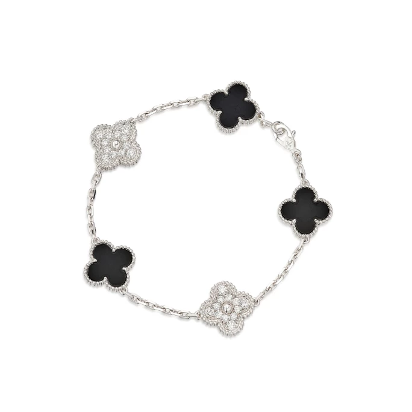
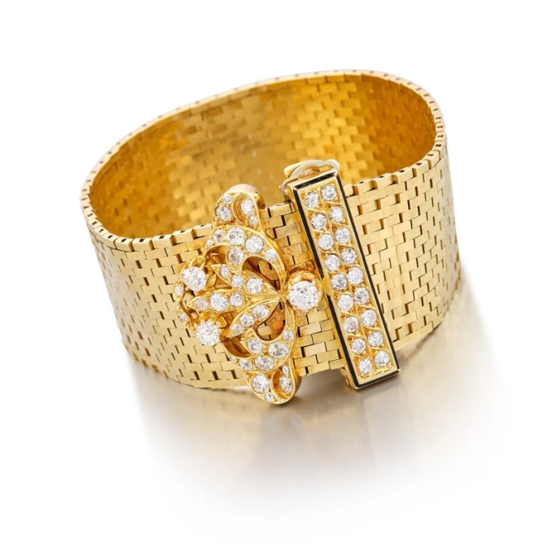
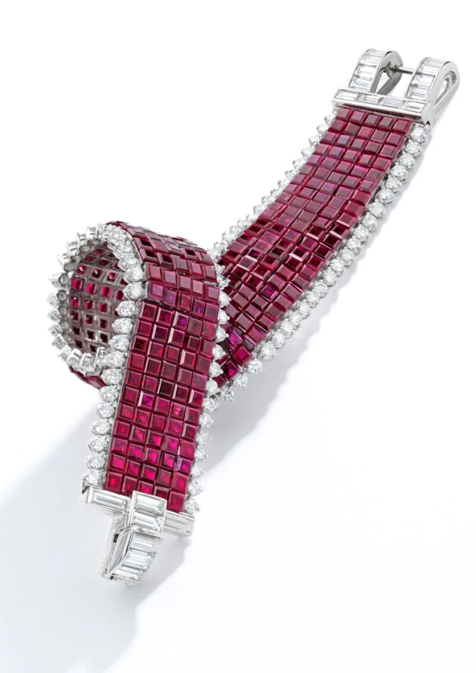
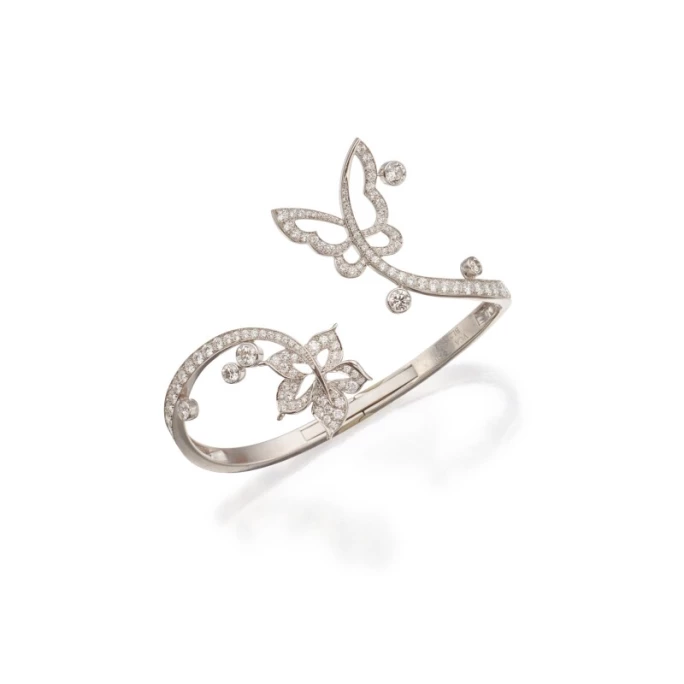
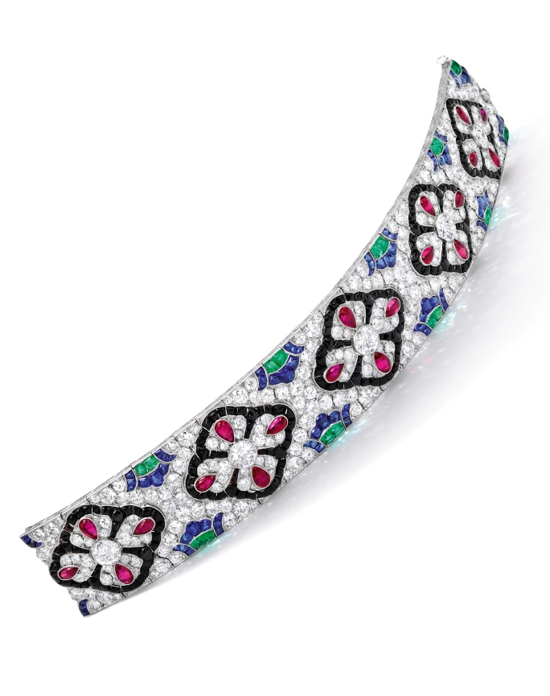

譯自 Lydia Dokko · Sotheby's
深入探索二級市場優勢，豐富您的梵克雅寶手鐲收藏。
梵克雅寶品牌淵源
梵克雅寶（Van Cleef & Arpels）創立於 1895 年，是享譽全球的法國高級珠寶世家，並於 1906 年開設首間精品店。品牌獨特的設計風格在 20 世紀逐漸成形，從大自然、東方文化、高級時裝、芭蕾舞，以及童話與幻想世界汲取多元靈感。同時，梵克雅寶以非凡的工藝創新與對頂級鑽石與寶石的不懈追求而著稱於世。
1999 年，歷峰集團（Richemont）收購梵克雅寶六成股份，並在 2001 年將持股比例提高至八成。歷峰集團麾下亦擁有卡地亞（Cartier）和布契拉提（Buccellati）等 19 個奢侈品牌。2023 年，經蘇富比拍賣易手的梵克雅寶珠寶總值超逾 2,000 萬美元，單品成交價從 5,000 美元至百萬美元以上皆有，足見其廣受追捧。梵克雅寶作為聲譽卓著的奢華珠寶名家，深受藏家與品味人士青睞，其每月 Google 搜尋量高達近 150 萬次。從每月搜尋數據可見，市場對梵克雅寶手鐲的需求與熱愛尤為突出，其搜尋量為品牌內高踞次席的項鍊產品兩倍有餘，遙遙領先。梵克雅寶零售業務的蓬勃興旺，亦為其在二級市場的亮眼佳績注入源源動力。藏家對品牌臻品的持續熱愛與渴求，正不斷推動其在二級市場的價值攀升。
最珍貴的梵克雅寶手鐲系列
梵克雅寶創造了諸多具有收藏價值的經典手鐲設計，以下將介紹五款最受新晉與資深藏家青睞的梵克雅寶手鐲系列。
1. 梵克雅寶「Alhambra」手鐲

梵克雅寶「Alhambra」手鐲
大多數梵克雅寶手鐲收藏始於「Alhambra」手鐲。梵克雅寶「Alhambra」手鐲系列在 1968 年誕生，是當代藏家最為熟悉的梵克雅寶標誌圖案。此系列問世之際，梵克雅寶正致力為新時代女性創造更觸手可及的精緻珠寶。「Alhambra」的設計靈感源自四葉草，亦呼應了傳統摩爾風格的四瓣圖案。據稱，此系列名稱取自西班牙格拉納達的阿爾罕布拉宮，而此建築以眾多氣勢磅礴的拱門而聞名。
2. 梵克雅寶「Ludo」手鐲

梵克雅寶「Ludo」手鐲
梵克雅寶「Ludo」手鐲創作於 1934 年，名稱源自路易斯·阿佩爾（Louis Arpels）的暱稱。這款手鐲的設計靈感來自腰帶，致敬高級時裝。「Ludo」手鐲誕生之時，束腰造型正當流行。借鑒腰帶的造型，「Ludo」手鐲如腰帶般柔軟服帖；而鑲滿寶石的扣環不僅華美，更時而內藏乾坤，巧妙地隱匿著一枚時計。其磚紋或蜂巢設計由無數精磨小長方形組成，熠熠生輝。獨樹一幟的「Ludo」手鐲是為您的梵克雅寶收藏增添華彩的點睛之作。
3. 梵克雅寶「Mystery Set」隱密式鑲嵌手鐲

梵克雅寶「Mystery Set」隱密式鑲嵌手鐲
梵克雅寶「Mystery Set」隱密式鑲嵌工藝在 1933 年獲得專利，開創了一種全新的寶石鑲嵌方式，旨在完美呈現寶石之美。每顆寶石經過精確切割，個別鑲入金質軌道中。梵克雅寶運用此工藝鑲嵌鑽石、紅寶石，亦適用於藍寶石與祖母綠。「Mystery Set」隱密式鑲嵌手鐲是梵克雅寶收藏中不可或缺的珍品。其獨特設計自 1933 年問世以來，歷久彌新、優雅依舊。「Mystery Set」隱密式鑲嵌工藝使鑽石與彩寶更顯璀璨奪目，成為視覺焦點。
4. 梵克雅寶花卉手鐲

梵克雅寶花卉蝴蝶造型手鐲
若論及眾藏家心願清單中的下一件梵克雅寶手鐲，非花卉主題莫屬。自 1907 年起，梵克雅寶便將娉婷花卉與萬千自然意象巧妙融入珠寶創作之中。其手鐲上對花卉細膩入微的刻劃，與品牌悠久傳承的經典美學一脈相承，深受世人珍愛與追捧。
5. 梵克雅寶高級珠寶手鐲

梵克雅寶手鐲，約 1925 年
梵克雅寶高級珠寶手鐲中的巔峰之作，其上常鑲嵌著碩大非凡的鑽石與華麗寶石，氣派萬千。蘇富比經常呈獻成交價動輒數十萬至逾百萬美元的梵克雅寶高級珠寶。此類手鐲或以其超卓寶石引人注目，或以逾 50 克拉的總重量驚艷四座。2017 年，蘇富比以 310 萬美元拍出一件極具代表性的梵克雅寶藍寶石配鑽石手鐲。此手鐲鑲有五顆糖塔式蛋面切割藍寶石，總重約 193.73 克拉，各鏈節以幾何圖形巧妙銜接，其上鑲以正方形、長方形、圓形及古歐洲式切割鑽石。這款稀世瑰寶在 1935 年誕生，原為珍妮絲·H·萊文（Janice H. Levin）故藏。2018 年，蘇富比再以 120 萬美元售出一款製於 1925 年的梵克雅寶稀有典藏級手鐲。此手鐲設計獨樹一幟，鏈帶由圓形切割鑽石鋪陳而成，其間點綴五組四葉幸運圖案，由矮蛋面切割（buff-top）紅寶石與縞瑪瑙勾勒輪廓，並與採用類似切割的祖母綠及藍寶石所組成的蓮花圖案交錯輝映，極盡巧思。